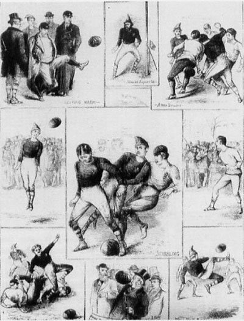
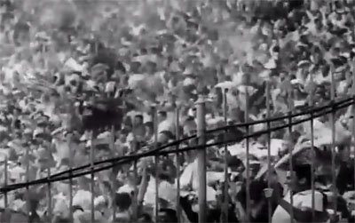

The history of football (soccer)
Football (or soccer as the game is called in some parts of the world) has a long history. Football in its current form arose
in England in the middle of the 19th century. But alternative versions of the game existed much earlier and are a part of the
football history.

* Early history and the precursors of football
The first known examples of a team game involving a ball, which was made out of a rock, occurred in old Mesoamerican cultures
for over 3,000 years ago. According to the sources, the ball would symbolize the sun and the captain of the losing team would
be sacrificed to the gods.
The first known ball game which also involved kicking took place In China in the 3rd and 2nd century BC under the name Cuju.
Cuju was played with a round ball on an area of a square. It later spread to Japan and was practiced under ceremonial forms.
Other earlier variety of ball games had been known from Ancient Greece. The ball was made by shreds of leather filled with
hair (the first documents of balls filled with air are from the 7th century). In the Ancient Rome, games with balls were not
included in the entertainment on the big arenas, but could occur in exercises in the military. It was the Roman culture that
would bring football to the British island (Britannica). It is, however, uncertain in which degree the British people were
influenced by this variety and in which degree they had developed their own variants
* The game of football takes its form
The most admitted story tells that the game was developed in England in the 12th century.In this century,games that resembled
football were played on meadows and roads in England. Besides from kicks, the game involved also punches of the ball with
the fist. This early form of football was also much more rough and violent than the modern way of playing. An important
feature of the forerunners to football was that the games involved plenty of people and took place over large areas in
towns(an equivalent was played in Florence from the 16th century where it was called Calcio). The rampage of these games
would cause damage on the town and sometimes death.These would be among the reasons for the proclamations against the game
that finally was forbidden forseveral centuries. But the football-like games would return to the streets of London in the
17th century. It would be forbidden again in 1835, but at this stage the game had been established in the public schools.
It took, however, long time until the features of today’s football had been taken into practice. For a long time there was
no clear distinction between football and rugby. There were also many variations concerning the size of the ball,the number
of players and the length of a match.
The game was often played in schools and two of the predominant schools were Rugby and Eton. At Rugby the rules included the
possibility to take up the ball with the hands and the game we today know as rugby has its origin from here. At Eton on the
other hand the ball was played exclusively with the feet and this game can be seen as a close predecessor to the modern football.
The game in Rugby was called “the running game” while the game in Eton was called “the dribbling game”.
An attempt to create proper rules for the game was done at a meeting in Cambridge in 1848, but a final solution to all questions
of rules was not achieved.Another important event in the history of football came about in 1863 in London when the first Football
association was formed in England. It was decided that carrying the ball with the hands wasn't allowed. The meeting also resulted
in a standardization of the size and weight of the ball. A consequence of the London meeting was that the game was divided into
two codes: association football and rugby.
The game would, however, continue to develop for a long time and there was still much flexibility concerning the rules. For one
thing, the number of players on the pitch could vary. Neither were uniforms used to distinguish the appearance of the teams. It
was also common with players wearing caps – the header was yet to be a part of the game yet. Further reading: The development of
football rules.
Another important difference at this stage could be noticed between English and Scottish teams.Whereas the English teams preferred
to run forward with the ball in a more rugby fashion, the Scottish chose to pass the ball between their players. It would be the
Scottish approach that soon became predominant.
The sport was at first an entertainment for the British working class. Unprecedented amounts of spectators, up to 30,000,would see
the big matches in the late 19th century. The game would soon expand by British peoples that traveled to other parts of the world.
Especially in South America and India would the interest in football become big.
The first football clubs
Football clubs have existed since the 15th century, but unorganized and without official status. It is therefore hard to decide which the first football club was. Some historians suggest that it was the Foot-Ball Club formed 1824 in Edinburgh. Early clubs were often formed by former school students and the first of this kind was formed in Sheffield in 1855. The oldest among professional football clubs is the English club Notts County that was formed in 1862 and still exists today.
An important step for the emergence of teams was the industrialization that led to larger groups of people meeting at places such as factories, pubs and churches. Football teams were established in the larger cities and the new railroads could bring them to other cities.
In the beginning, football was dominated by public school teams, but later, teams consisting by workers would make up the majority. Another change was successively taking place when some clubs became willing to pay the best players to join their team. This would be the start of a long period of transition, not without friction, in which the game would develop to a professional level.
The motivation behind paying players was not only to win more matches. In the 1880s the interest in the game has moved ahead to a level that tickets were sold to the matches. And finally, in 1885 professional football was legalized and three years later the Football League was established. During the first season, 12 clubs joined the league, but soon more clubs became interested and the competition would consequently expand into more divisions.
For a long time, the British teams would be dominant. After some decades, clubs from Prague, Budapest and Sienna would be the primarily contenders to the British dominance.
As with many things in history, women were for a long time excluded from participating in games. It was not before the late 19th century that women started to play football
The first competitions

Other milestones were now to follow. Football Association Challenge Cup (FA Cup)
became the first important competition when it was run in 1871. The following
year a match between two national teams was played for the first time. The match
that involved England and Scotland ended 0-0 and was followed by 4,000 people at
Hamilton Crescent (the picture shows illustrations from this occasion).
Twelve years later, in 1883, the first international tournament took place and
included four national teams: England, Ireland, Scotland and Wales.
Football was for a long time a British phenomenon, but it gradually spread to
other European countries. The first game that took place outside Europe occurred
in Argentina in 1867, but it was foreign British workers who were involved and
not Argentinean citizens.
The Fédération Internationale de Football Association (FIFA) was founded in 1904
and a foundation act was signed by representatives from France, Belgium, Denmark,
the Netherlands, Spain, Sweden and Switzerland. England and the other British
countries did not join FIFA from the start, they had invented the game and saw no reason to subordinate to an association. Still, they joined in the following year, but would not partake in the World Cup until 1950.
Domestic leagues occurred in many countries. The first was, as already mentioned, the English Football League which was established in 1888. The leagues would by time expand by more divisions, which were based on team performance.
In 1908 would football for the first time be included as an official sport in the Olympic Games. Until the first FIFA World Cup was played in 1930, the Olympic Games football tournament would rank as the most prestigious on a national level. Women's football was not added until 1996.
* Black players
As in many other sports the white male was predominant for a long time. In football black players started being present relatively early and in comparison with, for example, tennis, football has traditionally been known as a sport with a mix of black and white players.
In Britain, Andrew Watson is known to be the first black player, and he played in the Scottish club Queen’s Park in the 1880s.

Few other sports show examples of passion to that extent as football. The arenas are
flocked by shearing people; and in front of television even more are watching carefully
and
sometimes with great enthusiasm.
Already in the late 19th century, Goodison Park was built in England in purpose of
hosting football games. In 1894, the FA Cup final between Notts County and Bolton
Wanderers was attended by 37,000 people. A milestone in the development of football
stadiums is the construction of Maracanã Stadium. In the year of 1950 the imposing stadium in Rio de Janeiro was ready for almost 200,000 people. No other sport has seen stadiums of that capacity built to host its games.
There have been two different traditions of fan culture on the arenas: the British and the South American. The British fans adopted the tradition of singing, the repertoire was inspired from pub and working songs among other areas. The South Americans on the other hand would adopt the carnival style which included firecrackers and fireworks, and also the modern phenomena of Bengali fires. Fans in other countries have later adopted a mixture of these traditions.
* Globalization of the biggest sport in the world
In the late 19th century, only a few national football teams existed; England and Scotland had the first active teams that played games against each other in the 1870s. Today there are 211 national associations included in the Fédération Internationale de Football Association (FIFA), the world governing body of the sport. Another proof of the globalization could be seen in the increase of nations participating in the World Cup qualifiers: from 32 in 1934 to over 200 in 2014.
The world regions have been divided into six confederations: Confédération Africaine de Football (CAF), Asian Football Confederation (AFC), Union des Associations Européennes de Football (UEFA), The Confederation of North, Central America and Caribbean Association Football (CONCACAF), Oceania Football Confederation (OFC), and Confederación Sudamericana de Fútbol (CONMEBOL).
* The name of the game: football or soccer?
In most parts of the world, football is used as the name for the “chess of the green pitch”, the biggest sport in the world. In the United States and Canada, however, soccer is used instead as a distinction from American football. A more formal name sometimes used is association football, but in popular speech, it is either football or soccer.
|
|---|